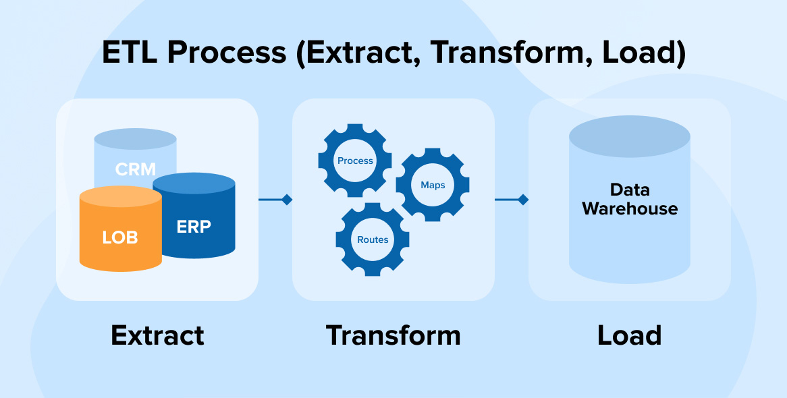
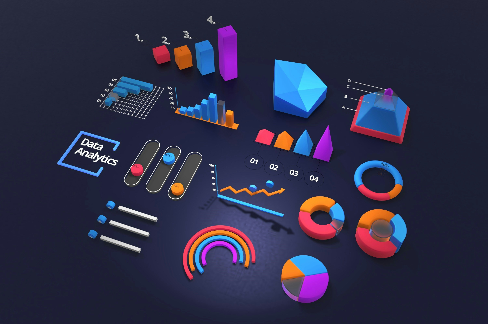

This project demonstrates a comprehensive data warehousing and analytics solution, from building a data warehouse to generating actionable insights. This project involves:
1. Data Architecture: Designing a Modern Data Warehouse Using Medallion Architecture Bronze, Silver, and Gold layers.
2. ETL Pipelines: Extracting, transforming, and loading data from source systems into the warehouse.
3. Data Modeling: Developing fact and dimension tables optimized for analytical queries.
4. Analytics & Reporting: Creating SQL-based reports and dashboards for actionable insights.

Housing data cleaned in Microsoft SQL Server. This project demonstrates a range of data cleaning techniques and considerations for the real estate industry.

Exploratory data analysis of COVID-19 dataset in Microsoft SQL Server.
View this data visualization of Airbnb data with Tableau. This project focuses on
key visualization design & creation techniques including:
1. Chart Selection: Choosing the right chart type for the data and the message.
2. Dashboard Design: Creating interactive and informative dashboards.
3. Visual Clarity: Ensuring visualizations are easy to understand and interpret.
4. Storytelling: Communicating insights effectively through visualizations.
5. Interactivity: Using Tableau's interactive features to allow users to explore the data.

A comprehensive collection of SQL scripts for data exploration, analytics, and reporting. This project includes scripts covering various analyses such as database exploration, measures and metrics, time-based trends, cumulative analytics, segmentation, and more.
The project presents a simple excel dashboard that offers a glimpse at bike sales. Key Excel skills demonstrated in the project include:
1. XLOOKUP vs VLOOKUP
2. Pivot Tables
3. Data Cleaning and Standardization .
Get sentiment analysis insights from data professionals about their profession. Data was cleaned and visualized in PowerBI as shown in this dashboard.